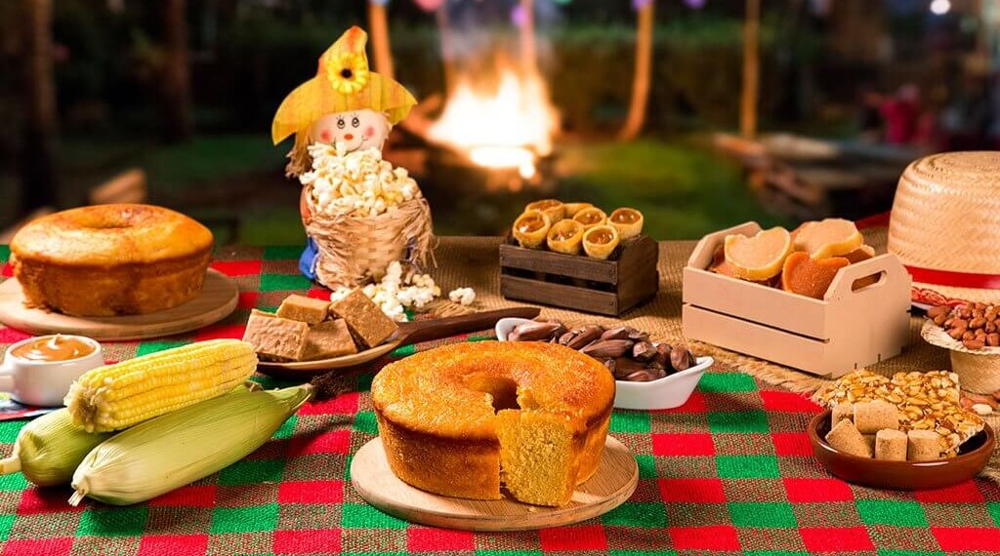

Sobre a Festa Junina
A Festa Junina é uma tradição popular brasileira que ocorre em junho e que foi trazida para o país pelos portugueses. Essa festividade celebra quatro diferentes santos católicos. É marcada por comidas típicas, danças como a quadrilha, fogueiras e decoração com bandeirolas. As pessoas presentes costumam usar roupas caipiras, como camisas xadrez e vestidos coloridos.
Características da Festa Junina
Muitos dos símbolos presentes na festa são: comidas, danças, balões, fogueiras, brincadeiras e vestimentas típicas.
Comidas Típicas
O milho é o protagonista! Entre os pratos típicos temos: pipoca, paçoca, pé de moleque, canjica, pamonha, bolo de milho, arroz-doce, entre outros. As bebidas incluem vinho quente e quentão.
Danças típicas
Nas festas juninas ouve-se e dança-se forró. A quadrilha junina é, todavia, a dança típica da festa Ela tem origem nas danças de salão na França e consiste numa bailada de casais caracterizados com vestimenta tipicamente caipira.
Brincadeiras
Brincadeiras como a cadeia, pau de sebo, pescaria, correio-elegante, saltar a fogueira, argola, entre outros, não podem faltar. Estão incluídas também as simpatias - que acabam carregando um pouco do tom de divertimento.
Roupas
As roupas tradicionais de festa junina são tipicamente caipiras, com vestimentas bem coloridas e de estampa xadrez.